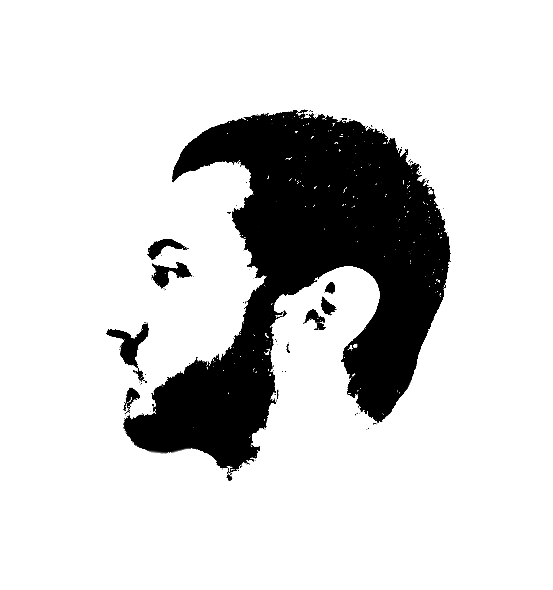

Meu nome é Artur Iure Vianna Fernandes, curso Matemática Computacional na Universidade Federal Fluminense, programo desde 2019 e vivo desde 1999. Meus interesses incluem: linguagens de programação, interpretadores, compiladores, inteligência artificial, compressão, jogos de estratégia, jogos de gestão de recursos, escrita matemática, demonstração de teoremas, processamento de texto, processamento de imagens, didática matemática, etc.